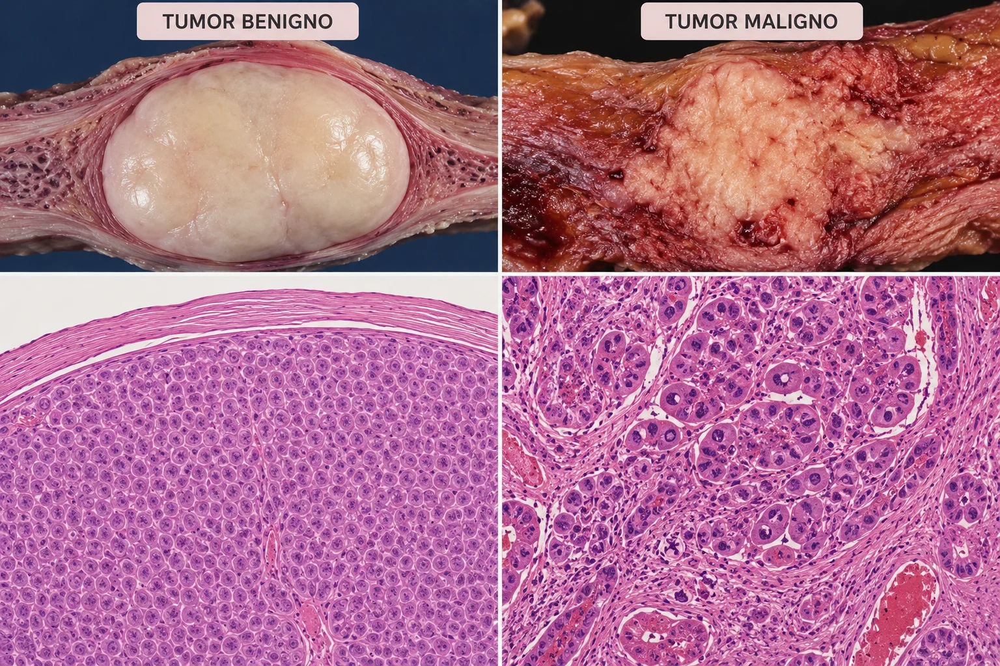
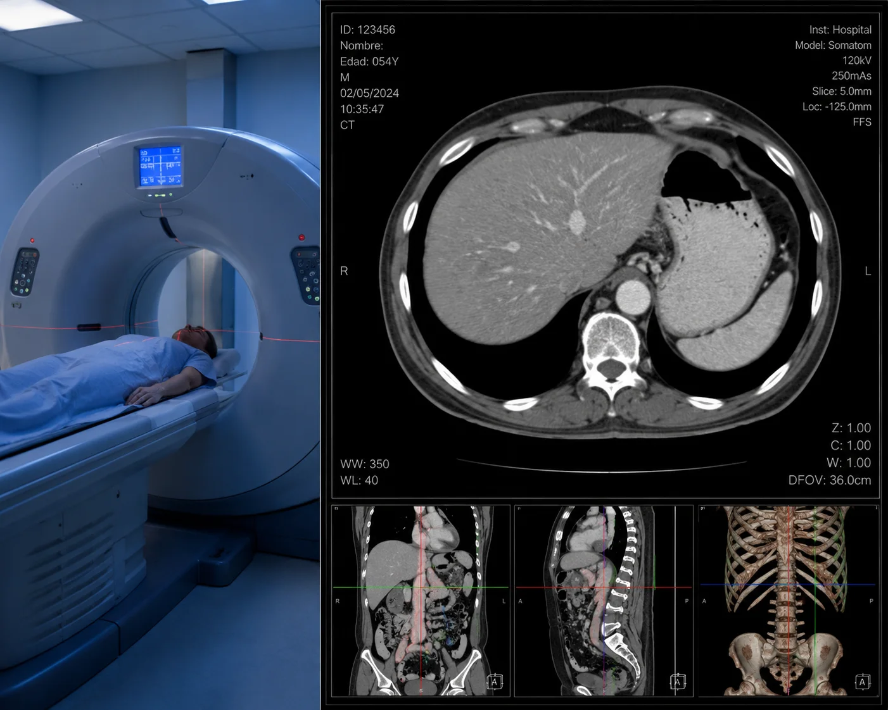
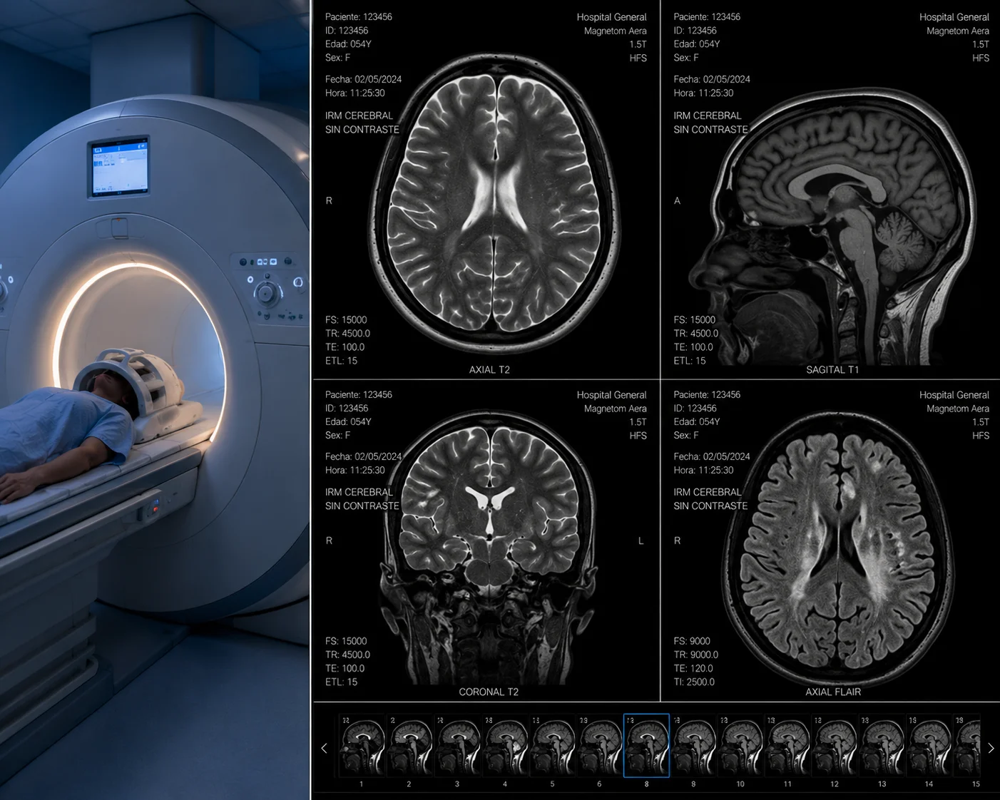
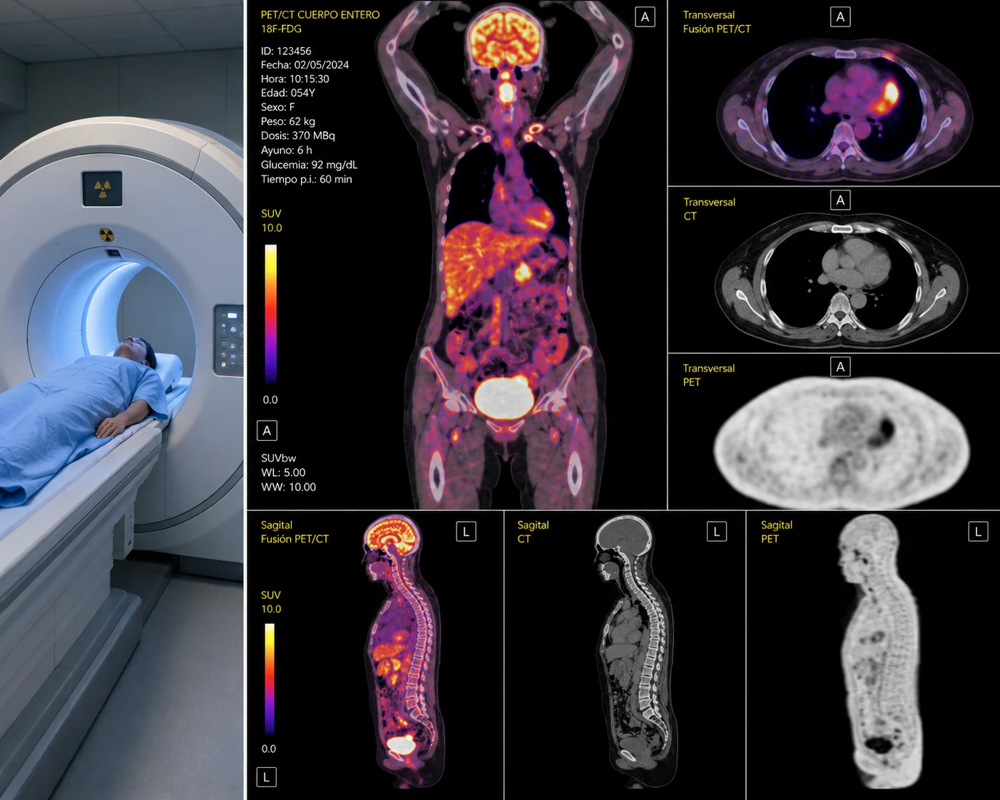
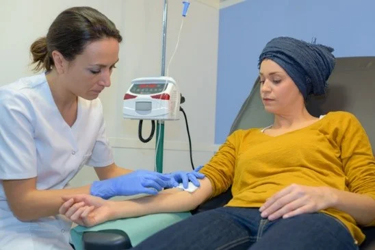
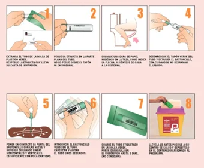
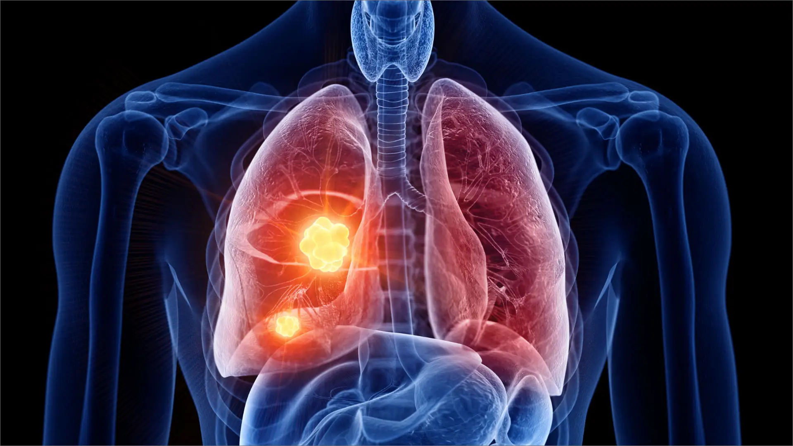
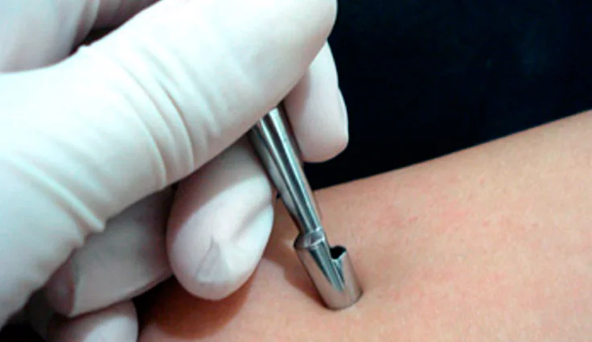

Oncología clínica y medios diagnósticos de neoplasias
Definición y clasificación histopatológica
Concepto: crecimiento anormal, descontrolado, autónomo y clonal de un tejido que evade los mecanismos biológicos de control celular y apoptosis.

Clasificación por comportamiento
- •Benignas: de crecimiento lento, localizadas, bien diferenciadas, respetan los límites de los tejidos adyacentes y no producen metástasis.
- •Malignas (cáncer): invasivas, de crecimiento rápido, anaplásicas (pierden la diferenciación celular original) y con capacidad de infiltrar vasos sanguíneos o linfáticos para metastatizar.
Clasificación por estructura tisular
- •Epitelial: carcinomas y adenocarcinomas.
- •Conectivo / mesenquimatoso: sarcomas (óseos, musculares).
- •Sanguíneo / linfoide: leucemias y linfomas.
Cuidados de enfermería en el procedimiento
Antes
Verificación de identidad, antecedentes, alergias y factores de riesgo; confirmación del consentimiento informado. Se mitiga la ansiedad con educación y se alista el material en condiciones seguras.
Durante
Asepsia rigurosa, colaboración con el equipo, apoyo emocional, monitoreo de signos vitales y reacciones adversas, y correcto etiquetado y conservación de las muestras.
Después
Monitorización del estado general (signos vitales, dolor, hemorragias o infecciones) e instrucciones de cuidados en casa, restricciones y signos de alarma.
Arsenal de herramientas diagnósticas
Diagnóstico precoz (tamizaje)
Uso de pruebas médicas estandarizadas en poblaciones asintomáticas para detectar precozmente lesiones preneoplásicas o cáncer en estadios iniciales, mejorando drásticamente el pronóstico de supervivencia.
Análisis de laboratorio y marcadores tumorales
Identificación en sangre u otros fluidos de sustancias producidas por las células cancerosas o por el organismo en respuesta a estas.
PSA
Antígeno prostático específico — orientador del cáncer de próstata.
CA-125
Monitoreo del cáncer de ovario.
CEA
Antígeno carcinoembrionario — seguimiento del cáncer colorrectal.
Pruebas de imagen avanzadas

Tomografía computarizada (TC)
Rayos X computarizados para visualizar la estructura del tumor, la invasión local y la afectación ganglionar.

Resonancia magnética (IRM)
Campos magnéticos de alta resolución para estudiar de forma detallada tumores en tejidos blandos.

Gammagrafía / PET
Medicina nuclear para evaluar la actividad metabólica o focos metastásicos óseos y orgánicos.
Cuidados de enfermería en los estudios diagnósticos
Antes
Gestión y preparación: verificar identidad, historial, indicaciones y requisitos (ayuno, suspensión de fármacos). Educación sobre la importancia del estudio y preparación del material.
Durante
Bioseguridad y precisión técnica: obtención adecuada de muestras, identificación correcta, acompañamiento emocional y vigilancia del estado general en posición cómoda y segura.
Después
Recuperación y registro: monitorizar signos vitales, atender el sitio de punción o biopsia, educar sobre cuidados y signos de alarma, registrar y enviar las muestras.
Monitorización durante quimioterapia y radioterapia
Seguimiento clínico y analítico regular del paciente oncológico para evaluar la respuesta del tumor (reducción de masa tumoral), monitorear los efectos secundarios (mielosupresión, toxicidad hepática o renal) y realizar los ajustes necesarios de dosis o pautas según la evolución.

Valoración inicial
Evaluación integral: constantes vitales, laboratorios y evolución clínica para confirmar condiciones óptimas. Se indaga sobre antecedentes y reacciones previas y se instruye sobre el proceso de vigilancia.
Vigilancia en el tratamiento
Observación continua de la respuesta y detección temprana de toxicidad: náuseas, vómitos, fatiga, mucositis, alteraciones cutáneas o mielosupresión. Soporte emocional y medidas de confort.
Cuidados posteriores
Registro de hallazgos, notificación de anomalías, programación de controles y adiestramiento de la familia sobre cuidados domiciliarios, señales de alarma y adherencia terapéutica.
Cribado de los cánceres más frecuentes

Cáncer colorrectal
Test de sangre oculta en heces (sangrados microscópicos) y colonoscopia (visualización directa de la mucosa, biopsias o polipectomías).
Cáncer de mama
Mamografías (radiografía especializada) y ecografías mamarias para caracterizar nódulos y lesiones no palpables.

Cáncer de pulmón
Radiografías de tórax y tomografías computarizadas (TC) de baja dosis en poblaciones de riesgo (fumadores).

Cáncer de piel
Exámenes dermatológicos periódicos (clínica visual y dermatoscópica), confirmados con biopsias cutáneas ante lesiones sospechosas.
Cuidados de enfermería en el cribado
Antes
Recepción del paciente: confirmar identidad, analizar antecedentes y factores de riesgo, verificar pautas preparatorias e instruir sobre el valor del tamizaje como detección precoz.
Durante
Salvaguardar el bienestar físico y la protección con normas de bioseguridad, monitorización continua, contención emocional y correcta recolección, rotulado y preservación de las muestras.
Después
Vigilar la recuperación, detectar complicaciones, asegurar la estabilidad antes del egreso y capacitar sobre informes, seguimiento, estilos de vida saludables y señales de alerta.